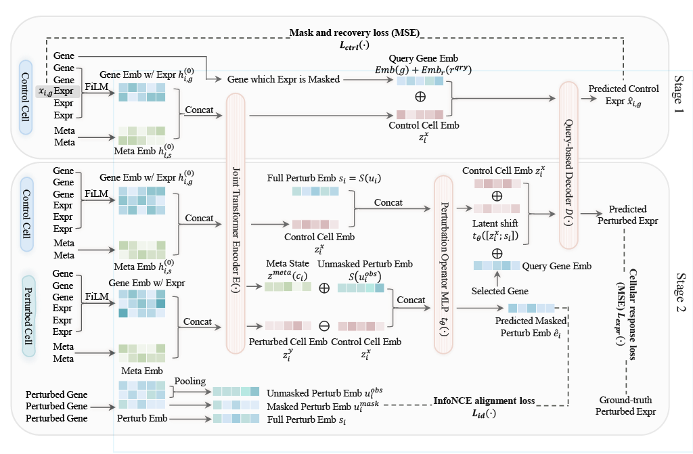
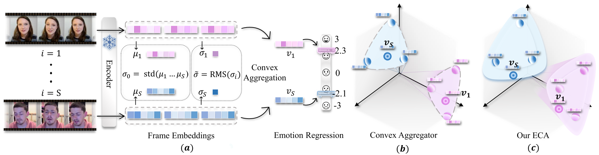
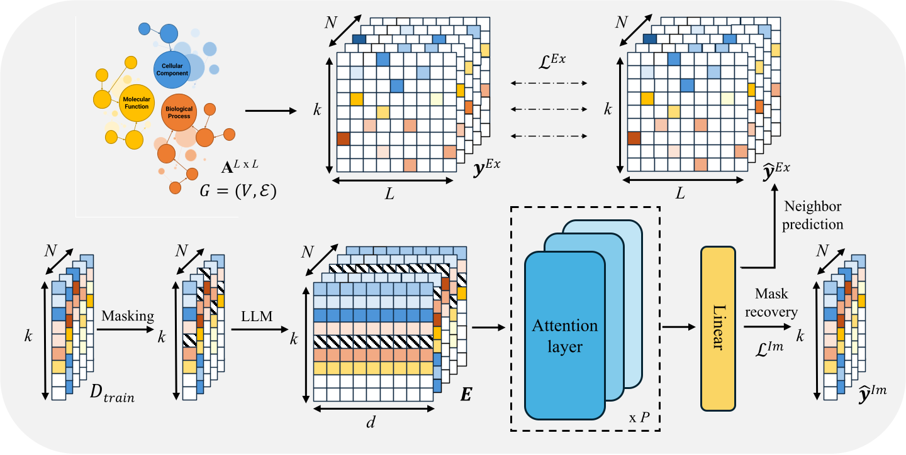
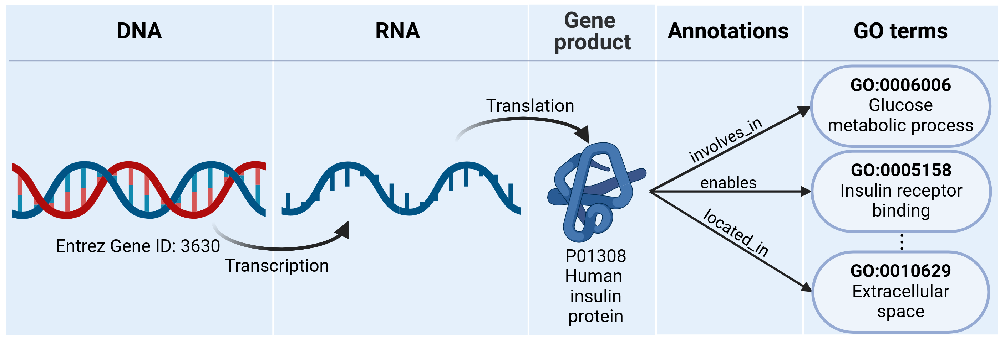

CytoWave
Orthology-aligned foundation model for single-cell genetic perturbation responses.
Open Project
Orthology-aligned foundation model for single-cell genetic perturbation responses.
Open Project
Attention-based regression models are often trained by jointly optimizing Mean Squared Error (MSE) loss and Pearson correlation coefficient (PCC) loss, empha- sizing the magnitude of errors and the order or shape of targets, respectively. A common but poorly understood phenomenon during training is the PCC plateau: PCC stops improving early in training, even as MSE continues to decrease. We provide the first rigorous theoretical analysis of this behavior, revealing funda- mental limitations in both optimization dynamics and model capacity.
Open Project

Graph-informed BERT for universal gene function prediction and novel function discovery.
Open Project
